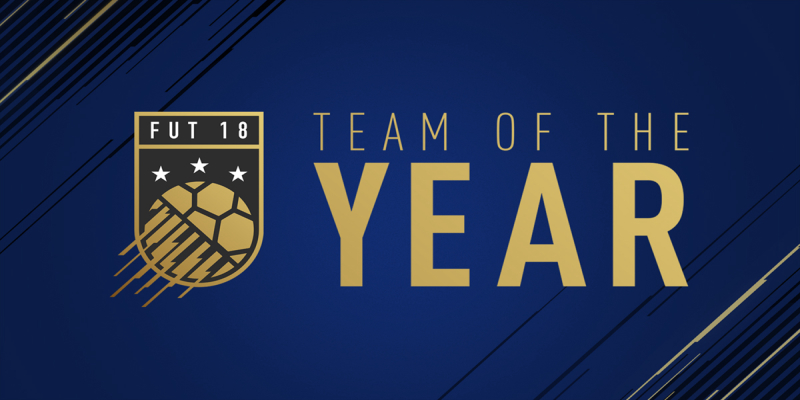

Hvernig er TOTY valið
Until 2011, the writers at the website had constructed a short-list of sixty footballers and coaches who have performed well in European club competitions, domestic competitions and international tournaments for that particular year. Users then cast their vote of a line-up consisting of eleven players (including a goalkeeper, four defenders, four midfielders, and two forwards) and a coach based on who they believed excelled in European football. After the selection is made, the user also has to select one of the players to be the captain of their team.
The format of the vote was changed in 2012 – now users first choose their preferred formation (4–4–2, 3–5–2, 3–4–3, 4–3–3 or 5–3–2), and then choose the relevant number of players for each position. The voters have a choice between 4 goalkeepers, 12 defenders, 12 midfielders and 12 forwards. The voting for best coach was discontinued.
After the votes are cast, they are tallied and the final team is announced on the UEFA website.
Hvað er TOTY
The UEFA Team of the Year is a football award given by UEFA through a poll on its official website. This award started in 2001 to allow users and visitors of the organization's website to choose their own eleven players and a coach based on their overall performances in European club football and international competitions.

Hvaða fótboltamenn hafa verið valdnir bestu allra tíma
Iker Casillas (Real Madrid),
Philipp Lahm (Bayern Munich),
Carles Puyol (Barcelona),
Gerard Piqué (Barcelona),
Sergio Ramos (Real Madrid),
Andrés Iniesta (Barcelona),
Steven Gerrard (Liverpool),
Xavi (Barcelona),
Cristiano Ronaldo (Manchester United/Real Madrid),
Thierry Henry (Arsenal),
Lionel Messi (Barcelona)
Hverjir hafa verið valdnir oftast
The player with the most appearances in the team is Cristiano Ronaldo, having appeared thirteen times. Second is Lionel Messi, having appeared ten times. Sergio Ramos comes third with eight appearances. The most consecutive appearances in the team is twelve for Cristiano Ronaldo (2007–2018), followed by Sergio Ramos with seven (2012–2018) and Iker Casillas (2007–2012) with six.
The teams with the most player appearances (not including manager appearances) are Real Madrid, Barcelona with 47, followed by Bayern Munich and Milan. Barcelona has been the team with the most players selected in a single season with six players in 2009 and 2010. The only other teams with more than three players in one season are Bayern Munich, with four players in 2013 and five in 2014, and Real Madrid, with five players in 2017 and 2018, and four in 2003, 2012–2014 and 2016.
The manager with the most appearances is José Mourinho, with four appearances (one with Internazionale, two with Porto and one with Chelsea). He is followed by Alex Ferguson, who has two appearances.